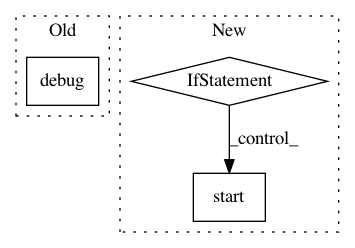

fa17621d9c8c5e5a0b7f9a89be489dd0c5ba0445,ilastik-shell/applets/pixelClassification/pixelClassificationGui.py,PixelClassificationGui,onTrainAndPredictButtonClicked,#PixelClassificationGui#,695
Before Change
self.predictionSerializer.predictionStorageEnabled = True
traceLogger.debug("Starting prediction save")
self.shellRequestSignal.emit( ShellRequest.RequestSave )
traceLogger.debug("Finished prediction save?")
self.predictionSerializer.predictionStorageEnabled = False
// Restore original cache state
self.pipeline.FreezePredictions.setValue(predictionsFrozen)
After Change
with Tracer(traceLogger):
// The button does double-duty as a cancel button while predictions are being stored
if self._currentlySavingPredictions:
self.predictionSerializer.cancel()
else:
// Compute new predictions as needed
predictionsFrozen = self.pipeline.FreezePredictions.value
self.pipeline.FreezePredictions.setValue(False)
self._currentlySavingPredictions = True
originalButtonText = "Save Predictions"
self._predictionControlUi.trainAndPredictButton.setText("Cancel Save")
def saveThreadFunc():
with Tracer(traceLogger):
// First, do a regular save.
// During a regular save, predictions are not saved to the project file.
// (It takes too much time if the user only needs the classifier.)
self.shellRequestSignal.emit( ShellRequest.RequestSave )
// Enable prediction storage and ask the shell to save the project again.
// (This way the second save will occupy the whole progress bar.)
self.predictionSerializer.predictionStorageEnabled = True
self.shellRequestSignal.emit( ShellRequest.RequestSave )
self.predictionSerializer.predictionStorageEnabled = False
// Restore original states (must use events for UI calls)
self.thunkEventHandler.post(self._predictionControlUi.trainAndPredictButton.setText, originalButtonText)
self.pipeline.FreezePredictions.setValue(predictionsFrozen)
self._currentlySavingPredictions = False
saveThread = threading.Thread(target=saveThreadFunc)
saveThread.start()
// // Can"t change labels while we"re in the middle of a prediction
// self._labelControlUi.labelListModel.allowRemove(False)
//
// // Disable the parts of the GUI that can"t be used while we"re predicting . . .
// self._labelControlUi.AddLabelButton.setEnabled(False)
//
// // TODO: Need a way to disable upstream inputs while this is going on . . .
// //self._featureSelectionUi.SelectFeaturesButton.setEnabled(False)
// self._predictionControlUi.trainAndPredictButton.setEnabled(False)
//
// // Closure to call when the prediction is finished
// def onPredictionComplete(predictionResults):
// with Tracer(traceLogger):
// logger.debug("Prediction shape={}".format(predictionResults.shape))
//
// // Re-enable the GUI
// self._labelControlUi.AddLabelButton.setEnabled(True)
// self._predictionControlUi.trainAndPredictButton.setEnabled(True)
// self._labelControlUi.labelListModel.allowRemove(True)
//
// // Re-fix the operators now that the computation is complete.
// for o in self.fixableOperators:
// o.inputs["fixAtCurrent"].setValue(True)
//
// // Redraw the image in the GUI
// self.editor.scheduleSlicesRedraw()
//
// // Request the prediction for the entire image stack.
// // Call our callback when it"s finished
// self.pipeline.CachedPredictionProbabilities[self.imageIndex][:].notify( onPredictionComplete )
def addPredictionLayer(self, icl, ref_label):
Add a prediction layer to the editor.
In pattern: SUPERPATTERN
Frequency: 3
Non-data size: 3
Instances
Project Name: ilastik/ilastik
Commit Name: fa17621d9c8c5e5a0b7f9a89be489dd0c5ba0445
Time: 2012-07-11
Author: bergs@janelia.hhmi.org
File Name: ilastik-shell/applets/pixelClassification/pixelClassificationGui.py
Class Name: PixelClassificationGui
Method Name: onTrainAndPredictButtonClicked
Project Name: deepfakes/faceswap
Commit Name: 533025215d6629a1f506838fc9eeed33f2417591
Time: 2019-06-28
Author: 36920800+torzdf@users.noreply.github.com
File Name: lib/gui/wrapper.py
Class Name: FaceswapControl
Method Name: terminate
Project Name: vatlab/SoS
Commit Name: 28d0002b4e47820a25ed0e19c289e86875bc1b08
Time: 2019-02-17
Author: ben.bog@gmail.com
File Name: src/sos/controller.py
Class Name: Controller
Method Name: handle_master_push_msg